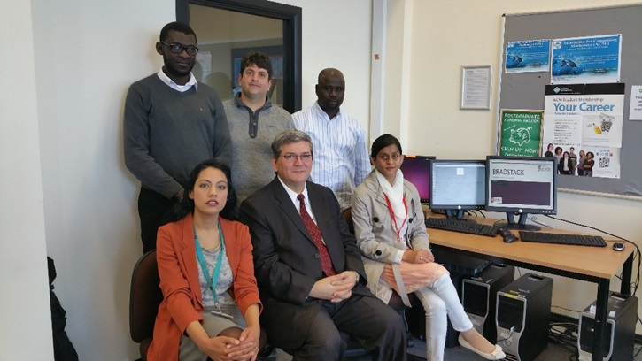
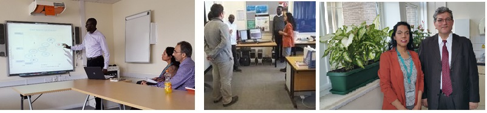

Projects
Research ‘Collaboratory’ Project Sep-09 – Jan-11 ( IBM – USA, DBI – Nigeria & UDUS – Nigeria)
Project Title: Research ‘Collaboratory’ for Mobile Social Services Nigeria (Research collaboration between UDUS – Nigeria, DBI – Nigeria & IBM – US) – Participated in:- Meetings and project planning: Successfully organised meetings, conference calls & reported summary of these to the management
- Needs assessment study: Successfully conducted a needs assessment of one of the projects
- Proposal Development: Successfully developed the project proposal with colleagues
- Prototype Application Developement: Successfully designed and developed the prototype platform of one of the projects with colleagues
Hadoop deployments
Configured and deployed Hadoop across Virtual Machines running Linux in the Big data systems and analytics (BDSA) laboratory in the University of Bradford. Configured and deployed Hadoop and Spark data platforms on Linux for the MSc in Cyber Security – Cloud Computing – University of Bradford. Designed and prepared a hands-on lab and course materials for the Cloud Computing Module of the MSc Cyber Security course at the University of Bradford.Analysis of Cloud Dataset Trace Collected from 40k-Nodes for 8 days 2019
( Cluster data collected from production clusters of Alibaba for cluster management research) Analysed a publicly available Google dataset containing workload and scheduler events emitted by the Borg cluster management system in a cluster of over 12,000 nodes during a one-month period. Studied how machines in the cluster are managed, and how jobs are scheduled and processed in the cluster. Investigated how the cluster resources are utilized especially, the amount of useful, wasted and idle resources.Network Security Assessment and Evaluation (BradStack)
Conducted a detailed security analysis of the Brad-Stack environment and addressed the discovered vulnerabilities, ensuring the entire infrastructure is secure. Conducted a comparative security analysis study of an Enterprise LAN setup in BradStack environment against a physical enterprise LAN setup. Followed by a web application vulnerability assessment as well as a comparison between two existing vulnerability assessment tools against BradStack. A comprehensive OpenStack API penetration testing against OpenStack core services was conducted to discover vulnerabilities.BradStack Building OpenStack from ground up
Deployed a customized OpenStack multi-node installation comprising of the Control, Compute and Network node where each node was configured to have two network interfaces namely the external network and the management network used for connectivity of the nodes. Each node was prepared and configured with the following services (Keystone, Glance, Cinder, Nova, Neutron), and several experiments were conducted (Pentest, Wireshark, network analysis using Packet analyser). Deployed BradStack Cloud infrastructure using the developed OpenStack installation toolkit.BradStack: University’s own Private Cloud Computing facility is Open for Business!
The Cloud computing research group at the School of Electrical Engineering and Computer Science has been successful in developing an in-house cloud computing facility for all to use. Using servers distributed across multiple sites in the department, the group has been able to create their very own cloud which is able to handle various amounts of loads, host software services and encourage game-changing research in building clouds from scratch into fully functional systems. The group has partnered with various organizations, Openstack Foundation, local SMEs and Sardinia Systems, to construct the facility, BradStack
Being led by the visions of Dr Mariam Kiran and Dr Mumtaz Kamala, BradStack provides infrastructure-as-a-service, for managing large pools of storage, compute, manage, and network resources throughout the university. Using open-source software, BradStack is unique and continuously being enhanced by software expertise within the group, making it ideal for infrastructure level research.
Dr Kiran explains “Our vision is that BradStack will be able to create and offer cloud computing services to research students and experimental space for other research groups. Our PhD students are already looking at issues of security, governance, SLAs, fault tolerance and performance analysis; trying out their algorithms on BradStack Cloud. Our initial experiments have shown the BradStack is fully functional and self-sustaining and now we are partnering with the IoT lab efforts to help support them. As a group we pride ourselves in doing core cloud data center research and software engineering, making us unique across the UK. BradStack is now open for business and we invite researchers from across the university to come talk to us about using the facility to host, process and manage their data or software applications.”
Clockwise from top to bottom: Phd Students (Bashir Mohammad, Noaman Shady, Kabiru Maiyama, Arjumand Javed) and group leads (Dr Mumtaz Kamala and Dr Mariam Kiran).
